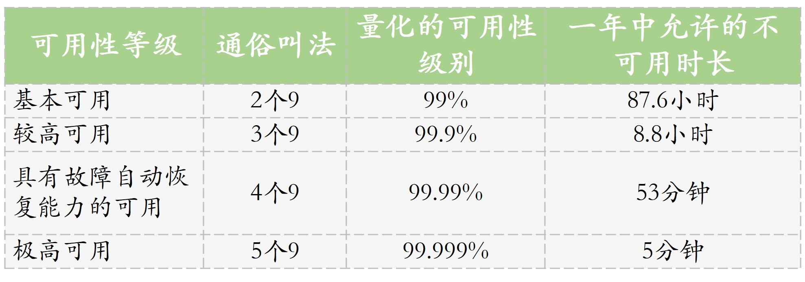

- 00 开篇词 从“小工”到“专家”，我的软件测试修炼之道.md.html
- 01 你真的懂测试吗？从“用户登录”测试谈起.md.html
- 02 如何设计一个“好的”测试用例？.md.html
- 03 什么是单元测试？如何做好单元测试？.md.html
- 04 为什么要做自动化测试？什么样的项目适合做自动化测试？.md.html
- 05 你知道软件开发各阶段都有哪些自动化测试技术吗？.md.html
- 06 你真的懂测试覆盖率吗？.md.html
- 07 如何高效填写软件缺陷报告？.md.html
- 08 以终为始，如何才能做好测试计划？.md.html
- 09 软件测试工程师的核心竞争力是什么？.md.html
- 10 软件测试工程师需要掌握的非测试知识有哪些？.md.html
- 11 互联网产品的测试策略应该如何设计？.md.html
- 12 从0到1：你的第一个GUI自动化测试.md.html
- 13 效率为王：脚本与数据的解耦 + Page Object模型.md.html
- 14 更接近业务的抽象：让自动化测试脚本更好地描述业务.md.html
- 15 过不了的坎：聊聊GUI自动化过程中的测试数据.md.html
- 16 脑洞大开：GUI测试还能这么玩（Page Code Gen + Data Gen + Headless）？.md.html
- 17 精益求精：聊聊提高GUI测试稳定性的关键技术.md.html
- 18 眼前一亮：带你玩转GUI自动化的测试报告.md.html
- 19 真实的战场：如何在大型项目中设计GUI自动化测试策略.md.html
- 20 与时俱进：浅谈移动应用测试方法与思路.md.html
- 21 移动测试神器：带你玩转Appium.md.html
- 22 从0到1：API测试怎么做？常用API测试工具简介.md.html
- 23 知其然知其所以然：聊聊API自动化测试框架的前世今生.md.html
- 24 紧跟时代步伐：微服务模式下API测试要怎么做？.md.html
- 25 不破不立：掌握代码级测试的基本理念与方法.md.html
- 26 深入浅出之静态测试方法.md.html
- 27 深入浅出之动态测试方法.md.html
- 28 带你一起解读不同视角的软件性能与性能指标.md.html
- 29 聊聊性能测试的基本方法与应用领域.md.html
- 30 工欲善其事必先利其器：后端性能测试工具原理与行业常用工具简介.md.html
- 31 工欲善其事必先利其器：前端性能测试工具原理与行业常用工具简介.md.html
- 32 无实例无真相：基于LoadRunner实现企业级服务器端性能测试的实践（上）.md.html
- 33 无实例无真相：基于LoadRunner实现企业级服务器端性能测试的实践（下）.md.html
- 34 站在巨人的肩膀：企业级实际性能测试案例与经验分享.md.html
- 35 如何准备测试数据？.md.html
- 36 浅谈测试数据的痛点.md.html
- 37 测试数据的“银弹”- 统一测试数据平台（上）.md.html
- 38 测试数据的“银弹”- 统一测试数据平台（下）.md.html
- 39 从小作坊到工厂：什么是Selenium Grid？如何搭建Selenium Grid？.md.html
- 40 从小工到专家：聊聊测试执行环境的架构设计（上）.md.html
- 41 从小工到专家：聊聊测试执行环境的架构设计（下）.md.html
- 42 实战：大型全球化电商的测试基础架构设计.md.html
- 43 发挥人的潜能：探索式测试.md.html
- 44 测试先行：测试驱动开发(TDD).md.html
- 45 打蛇打七寸：精准测试.md.html
- 46 安全第一：渗透测试.md.html
- 47 用机器设计测试用例：基于模型的测试.md.html
- 48 优秀的测试工程师为什么要懂大型网站的架构设计？.md.html
- 49 深入浅出网站高性能架构设计.md.html
- 50 深入浅出网站高可用架构设计.md.html
- 51 深入浅出网站伸缩性架构设计.md.html
- 52 深入浅出网站可扩展性架构设计.md.html
- 测试专栏特别放送 浅谈全链路压测.md.html
- 测试专栏特别放送 答疑解惑第一期.md.html
- 测试专栏特别放送 答疑解惑第七期.md.html
- 测试专栏特别放送 答疑解惑第三期.md.html
- 测试专栏特别放送 答疑解惑第二期.md.html
- 测试专栏特别放送 答疑解惑第五期.md.html
- 测试专栏特别放送 答疑解惑第六期.md.html
- 测试专栏特别放送 答疑解惑第四期.md.html
- 结束语 不是结束，而是开始.md.html
- 捐赠
50 深入浅出网站高可用架构设计
你好，我是茹炳晟。今天我和你分享的主题是：深入浅出网站高可用架构设计。
在今天这篇文章中，我将沿着网站架构的话题，和你继续聊聊高可用的架构设计。
顾名思义，网站高可用指的就是，在绝大多的时间里，网站一直处于可以对外提供服务的正常状态。业界通常使用有多少个“9”来衡量网站的可用性指标，具体的计算公式也很简单，就是一段时间内（比如一年）网站可用的时间占总时间的百分比。
我用下面这个表格，列出了四种最常见的可用性等级指标，以及允许的系统不可用时长。

一般，我们以“年”为单位来统计网站的可用性等级。“9”的个数越多，一年中允许的不可用时间就越短，当达到5个“9”的时候，系统全年不可用时间只有区区5分钟，可想而知这个指标非常难达到。
所以一般来讲，业界的网站能做到4个“9”，也就是说在一年内只有53分钟的时间网站是处于不可用状态，就已经是算是非常优秀了。
另外，可用性指标还有个特点，越往后越难提高，需要付出的经济成本和技术成本都会呈现类似指数级的增长。因此，在实际的网站架构设计过程中，到底需要做到几个“9”还需要结合具体的业务要求，以及风险评估来最终确定。
那么，接下来我就首先和你分析一下造成网站不可用的主要原因，然后再基于这些原因谈谈我们可以通过哪些对策和方法，将这些造成网站不可用的因素的影响降到最低。
其实，造成网站不可用的主要原因有以下三大类：
服务器硬件故障；
发布新应用的过程；
应用程序本身的问题。
服务器硬件故障
网站物理架构中，随机的硬件服务器的故障，比如某台服务器由于硬件故障宕机，可以说不是偶然，而是必然会发生的。尤其是目前互联网企业普遍采用的“牲口”模式集群方案。
而且随着网站规模不断扩大，网站后台的服务器数量也越来越多，所以由硬件故障引起问题的概率也是不断飙升。
所以，网站的高可用架构设计，需要保障的是即使出现了硬件故障，也要保证系统的高可用。
发布新应用的过程
网站的新版本发布过程中，往往会出现需要重新部署新的应用程序版本，然后再重启服务的情况。如果这个更新过程中不采用特殊技术手段的话，也会造成短暂的服务不可用。而且这种形式的不可用，相比服务器硬件故障的不可用更为常见。
原因很简单，互联网网站的功能更新迭代非常快，基本都是以“天”为单位来发布上线的，也就是说几乎每天都有需要中断服务来完成服务升级的可能。
显然，从业务角度来看，这种为了应用升级造成的服务不可用，完全不可能被接受。这就好比eBay或者淘宝告诉你说，我们每天某个时间段需要内部升级维护无法对外提供服务一样，让人无法接受。
从网站可用性指标的角度来看，这种频繁出现的停机升级过程将大大增加网站的不可用时间。因此，我们的高可用架构设计必须能够提供切实可行的方案，将这种停机升级的影响降到最小。
应用程序本身的问题
造成网站不可用的最后一个原因是，应用程序本身的问题。
比如，发布的应用程序版本身存在潜在的内存泄露，那么经过较长时间的运行积累后，最终会造成服务器的内存被占满，之后必须要靠重启服务来恢复。那么，这个时候就会引入短暂的服务不可用时间。
再比如，应用程序在测试环境没有经过充分的测试验证，或者说由于测试环境的配置和实际生产环境之间存在差异，有可能造成应用程序在生产环境部署完后无法使用的情况，从而造成服务不可用。
由此可见，应用程序在上线发布前进行充分、全面的测试，是多么的重要。无论是立竿见影就能发现的功能缺陷，还是需要长期运行才能暴露的软件问题，都可以通过软件测试去发现，然后反馈给开发人员去解决，从而避免造成系统的不可用。同时，我们也需要尽可能减少测试环境和生产环境的差异，尽可能采用完全相同的环境以及第三方依赖。
网站高可用架构设计
为了系统性地解决造成系统不可用的上述三类问题，提高网站的可用性，我们在网站高可用架构设计上，探索出了对应的三类方法。
- 第一类方法是，从硬件层面加入必要的冗余；
- 第二类方法是，灰度发布；
- 第三类方法是，加强应用上线前的测试，或者开启预发布验证。
对于第一类硬件故障造成的网站不可用，最直接的解决方案就是从硬件层面加入必要的冗余，同时充分发挥集群的“牲口”优势。
比如，对于应用服务器来说，即使没有伸缩性的要求，我们也会至少采用两台同样的服务器，并且引入一台额外的负载均衡器，所有的外部请求会先到负载均衡器，然后由负载均衡器根据不同的分配算法选择其中的某一台服务器来提供服务。
备注：伸缩性是指通过增加或减少服务器的数量，就可以扩大或者减小网站整体处理能力。我会在下一篇文章中和你详细分享。
这样，当其中一台服务器硬件出现问题甚至宕机的时候，另一服务器可以继续对外提供服务。这时，在外部看来系统整体依然是可用的，这就给恢复那台故障服务器提供了时间。而两台服务器同时出现硬件故障的概率是很低的。
因此，从测试人员的角度来看，知道了应用服务器集群的工作原理，就可以在设计测试的时候，针对集群中的某一个或者某几个节点的故障情况设计测试用例。
再比如，对于数据存储的服务器来说，往往通过数据冗余备份和失效转移机制来实现高可用。为了防止存储数据的服务器发生硬件故障而造成数据丢失，我们往往会引入多个数据存储服务器，并且会在数据有更新操作的时候自动同步多个数据存储服务器上的数据。
也就是说，数据的存储存在多个副本，那么当某台数据存储服务器故障的时候，我们就可以快速切换到没有故障的服务器，以此保证数据存储的高可用。
那么，从测试人员的角度来看，我们依旧可以针对这种情况设计出针对部分数据服务器发生故障时的测试用例，以完成系统应对故障的反应情况的测试。
对于第二类由于发布新应用造成的系统不可用，我们采用的主要技术手段是灰度发布。
使用灰度发布的前提是，应用服务器必须采用集群架构。假定现在有一个包含100个节点的集群需要升级安装新的应用版本，那么这个时候的更新过程应该是：
- 首先，从负载均衡器的服务器列表中删除其中的一个节点；
- 然后，将新版本的应用部署到这台删除的节点中并重启该服务；
- 重启完成后，将包含新版本应用的节点重新挂载到负载均衡服务器中，让其真正接受外部流量，并严密观察新版本应用的行为；
- 如果没有问题，那么将会重复以上步骤将下一个节点升级成新版本应用。如果有问题，就会回滚这个节点的上一个版本。
- 如此反复，直至集群中这100个节点全部更新为新版本应用。
在这个升级的过程中，服务对外来看一直处于正常状态，宏观上并没有出现系统不可用的情况。就好比是为正在飞行中的飞机更换引擎，而飞机始终处于“正常飞行”的状态一样。
对于第三类应用程序本身的问题造成的系统不可用，我们一方面要加强应用程序上线部署前的测试以保证应用本身的质量，另一方面需要启用所谓的预发布验证。
我们一定遇到过这样的尴尬情况：应用在测试环境中经过了完整、全面的测试，并且所有发现的缺陷也已经被修复并验证通过了，可是一旦发布到了生产环境，还是立马暴露出了很多问题。
这其中的主要原因是，测试环境和生产环境存在差异。比如，网络环境的限制可能不一样；再比如，依赖的第三方服务也可能不一样，测试环境连接的是第三方服务的沙箱环境，而生产环境连接的是真实环境。
为了避免这类由于环境差异造成的问题，我们往往会预发布服务器。预发布服务器和真实的服务所处的环境没有任何差别，连接的第三方服务也没有任何差别，唯一不同的是预发布服务器不会通过负载均衡服务器对外暴露，只有知道其IP地址的内部人员才可以对其进行访问。
此时，我们就可以借助自动化测试来对应用做快速的验证测试。如果测试通过，新的应用版本就会进入到之前介绍的灰度发布阶段。这种做法，可以尽最大可能保证上线应用的可用性。
总结
今天我和你分享了衡量网站高可用性的指标，对于一些大型网站来说，达到4个“9”（即99.99%，一年中的不可用时间不超过53分钟）已经算是优秀了。
然后，我将影响网站高可用的因素归为了三类，并相应地给出了解决这三类问题的方案：
由服务器硬件故障引起的网站不可用，对应的解决方案是从硬件层面加入必要的冗余；
由发布新应用的过程引入的网站不可用，对应的解决方案是采用灰度发布的技术手段；
由应用本身质量引入的网站不可用，对应的解决方案是，一方面加强测试提高应用本身的质量，另一方面是引入预发布服务器消除测试环境和生产环境的差异。
思考题
关于高可用架构设计，我在文章中和你分享了应用服务器和数据存储服务器的高可用架构。但是，我并没有介绍缓存服务器的高可用架构。那么，你认为缓存服务器是否也需要高可用架构的支持呢？如果需要的话，缓存集群的高可用架构应当如何设计？如果不需要，也请你分享一下你的理由。
感谢你的收听，欢迎你给我留言。
© 2019 - 2023 Liangliang Lee. Powered by gin and hexo-theme-book.